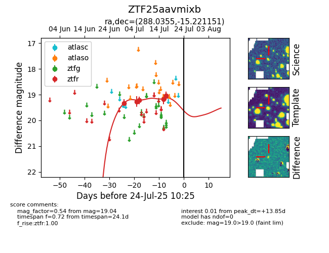

Target ZTF25aavmixb at 2025-07-24 10:25, see:
FINK: fink-portal.org/ZTF25aavmixb
Lasair: lasair-ztf.lsst.ac.uk/objects/ZTF25aavmixb
ALeRCE: alerce.online/object/ZTF25aavmixb
alt names
ZTF25aavmixb (ztf,fink)
coordinates:
equatorial (ra, dec) = (288.0355,-15.22115)
galactic (l, b) = (21.5205,-11.37271)
photometry
last ztfr=19.04
5 ztfr detections
